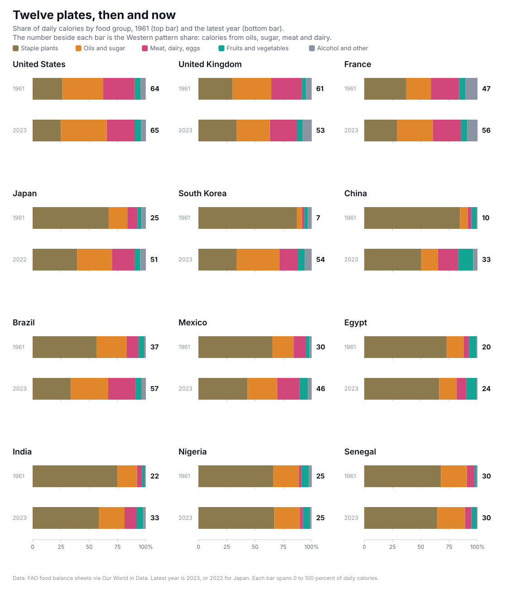
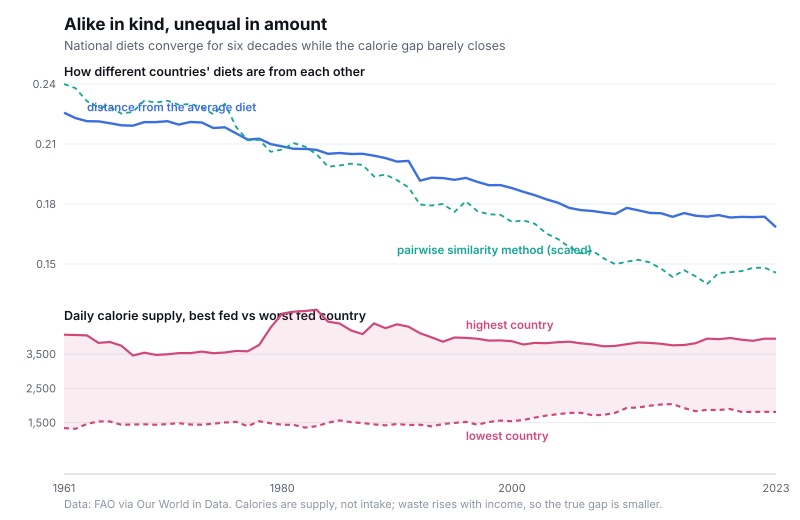

Final Project · DigHum 150B · Due August 16, 2026
One Plate, Unequal Portions
The answer, in one paragraph
Since 1961, national diets have steadily become more alike, and they have not converged on a neutral average. They have moved toward the plate that wealthy Western countries were already eating in 1961, heavy in oils, sugar, meat, and dairy, and nearly empty of pulses. At the same time, the gap in how much food people actually have has narrowed far less: the best fed country consumed three times the calories of the worst fed in 1961, and still consumes more than twice as much today. The world increasingly eats one kind of meal, in very unequal portions.
Twelve plates, then and now
The clearest way to see the convergence is to look at actual plates. Each tile below shows one country's diet as a share of daily calories, once in 1961 and once in the most recent year. In 1961 the tiles are visibly different countries: staple plants make up more than four fifths of the plate in India, Nigeria, Senegal, China, and South Korea, while the United States and the United Kingdom already gave a third or more of their calories to oils, sugar, meat, and dairy. In the bottom bars the tiles have visibly moved toward one another, and toward the Western pattern.

The twelve countries were not chosen to flatter the argument. They include the destination itself (the United States, the United Kingdom, France), the fastest mover in the whole dataset (South Korea, whose composition shifted more than any of the 134 countries with complete records), large countries that carry most of the world's population (China, India, Brazil, Mexico, Egypt, Nigeria), Japan as a wealthy non-Western comparison, and Senegal, which changed less than almost anyone and shows what resisting the trend looks like.
Convergence, measured two ways
Small multiples can be cherry picked, so the claim needs a measurement that uses every country at once. The top panel below measures how far each country's dietary composition sits from the global average, then averages that distance: it falls about 23 percent between 1961 and 2023 on the balanced panel of 133 countries present in every year. Because a single method can produce an artifact, the same question was recomputed with a second, independent measure, the average pairwise cosine distance between every pair of country profiles. It falls 29 percent. Both methods, applied to a panel where no country enters or leaves, agree: the world's diets are genuinely becoming more alike, smoothly and almost without interruption.

The direction of the convergence was tested rather than assumed. Against a reference profile built from what six wealthy Western countries ate in 1961, the average distance of all countries falls 30 percent. Against three alternative anchors built the same way from 1961 South Asian, East Asian, and West African plates, distance rises 15 percent, rises 14 percent, and stays flat. The world moved toward one plate and away from the others. That asymmetry is what justifies saying the convergence has a direction, and it is the part of this project I could not have asserted before running the numbers.
The unequal portion
The bottom panel is the necessary correction to the story above, and the reason this page is not titled "the world now eats alike." In 1961 the best fed country had 3.0 times the daily calorie supply of the worst fed; in 2023 the ratio was still 2.2. Composition converged far faster than quantity. And because these figures measure food supplied rather than food eaten, and waste rises with income, the true gap in consumption is somewhat smaller than the supply gap shown, a caveat printed on the chart itself rather than hidden here.
Why this is a humanities question
A cuisine is an inheritance of dishes, techniques, and agricultural practice, and this data records its erosion at global scale. When pulses fall by a quarter of their share worldwide, what recedes is not a nutrient but dal, frijoles, and shiro, and the fields and knowledge that produced them. Barry Popkin's nutrition transition names the mechanism; what the visualization adds is the directional claim that the transition has a destination, and that the destination is a specific, datable cultural pattern rather than modernity in the abstract. Ten commodity groups cannot see dishes, so convergence in composition is a floor on cultural convergence, not a ceiling: two countries can share macro-shares and still cook differently. The claim here is the measurable one.
Method, choices, and their costs
Every number on this page can be regenerated from the data files published in this site's repository. The choices that shaped the analysis, and what each one costs, are recorded here in the spirit of the decision log I have kept since Week 5.
-
Supply, not intake
FAO food balance sheets measure food available for consumption, including waste. Cross country and cross time comparisons are robust to this; absolute levels are overstated, and the rich poor gap more so, since waste rises with income.
-
Balanced panel for all trend claims
The reporting sample grows from 146 countries to 176 over the period, so every convergence figure was recomputed on the 133 countries present in all 63 years. The cost is excluding countries that appear mid-period, including most former Soviet states.
-
Two methods or no claim
The headline finding survives an independent recomputation by a second distance measure. Had the methods disagreed, both results would be reported here.
-
Named anchors
The Western reference is the 1961 average of the United States, the United Kingdom, France, Germany, Australia, and Canada. The alternative anchors are built identically from named countries, so the directional test can be checked or re-run with different baskets.
-
No causal language
This data shows that diets converged and toward what. It cannot show why, so words like caused and drove do not appear in this analysis.
Data: Our
World in Data, from FAO food balance sheets. Prepared datasets for
each figure are in assets/data/final/.